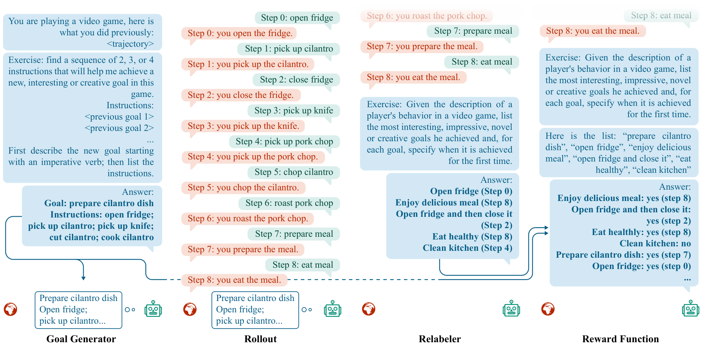
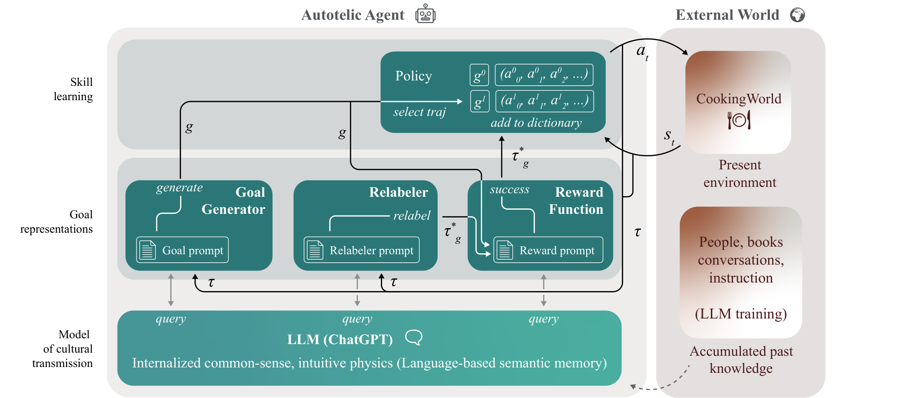
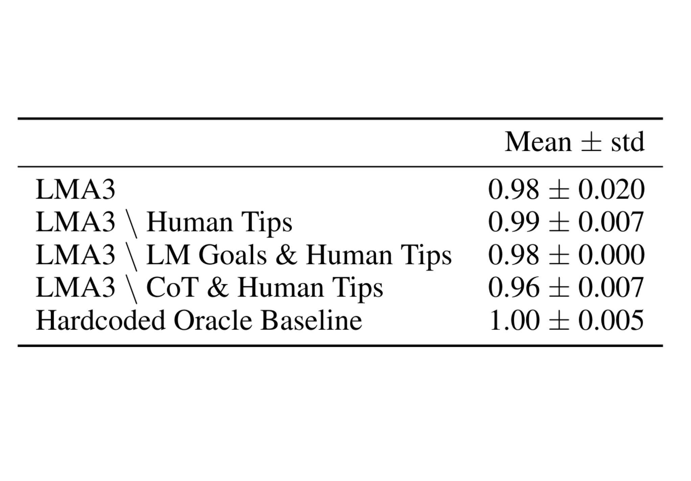
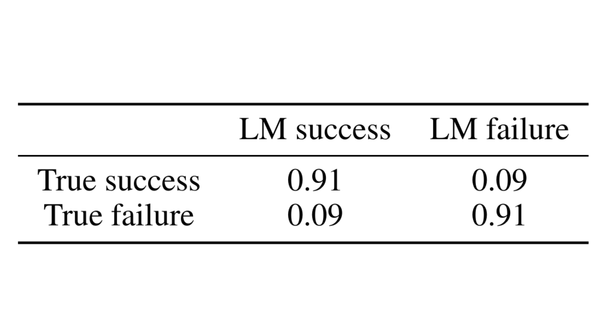

Augmenting Autotelic Agents with
Large Language Models
Abstract
Humans learn to master open-ended repertoires of skills by imagining and practicing their own goals. This autotelic learning process, literally the pursuit of self-generated (auto) goals (telos), becomes more and more open-ended as the goals become more diverse, abstract and creative. The resulting exploration of the space of possible skills is supported by an inter-individual exploration: goal representations are culturally evolved and transmitted across individuals, in particular using language. Current artificial agents mostly rely on predefined goal representations corresponding to goal spaces that are either bounded (e.g. list of instructions), or unbounded (e.g. the space of possible visual inputs) but are rarely endowed with the ability to reshape their goal representations, to form new abstractions or to imagine creative goals. In this paper, we introduce a language model augmented autotelic agent (LMA3) that leverages a pretrained language model (LM) to support the representation, generation and learning of diverse, abstract, human-relevant goals. The LM is used as an imperfect model of human cultural transmission; an attempt to capture aspects of humans’ common-sense, intuitive physics and overall interests. Specifically, it supports three key components of the autotelic architecture: 1) a relabeler that describes the goals achieved in the agent’s trajectories, 2) a goal generator that suggests new high-level goals along with their decomposition into subgoals the agent already masters, and 3) reward functions for each of these goals. Without relying on any hand-coded goal representations, reward functions or curriculum, we show that LMA3 agents learn to master a large diversity of skills in a task-agnostic text-based environment.
1 Introduction
Each human learns an open-ended set of skills across their life: from throwing objects, building Lego structures and drawing stick figures, to perhaps playing tennis professionally, building bridges or conveying emotions through paintings. These skills are not the direct product of evolution but the result of goal-directed learning processes. Although most living creatures pursue goals that directly impact their survival, humans seem to spend most of their time pursuing frivolous goals: e.g. watching movies, playing video games, or taking photographs (Chu & Schulz, 2020).
The field of developmental AI models these evolved tendencies with intrinsic motivations (IM), internal reward systems that drive agents to experience interesting situations and explore their environment (Singh et al., 2010; Oudeyer & Kaplan, 2007). While knowledge-based IMs drive agents to learn about the world (Aubret et al., 2019; Linke et al., 2020), competence-based IMs drive agents to learn to control their environment (Oudeyer & Kaplan, 2007; Colas et al., 2022b). Agents endowed with these intrinsic motivations are autotelic; they are intrinsically driven (auto) to learn to represent, generate, pursue and master their own goals (telos) (Colas et al., 2022b). Open-ended learning processes require the joint training of a problem generator (e.g. environment dynamics, opponents, goals) and a problem solver: the former challenging the latter in more and more complex scenarios, providing a never-ending curriculum for the problem solver (Schmidhuber, 2013; Wang et al., 2020; Ecoffet et al., 2021; Jiang et al., 2021; Team et al., 2023). Autotelic agents are specifically designed for open-ended skill learning by jointly training a goal generator and a goal-conditioned policy, see a review in Colas et al. (2022b).

Human skill learning is a cultural process. Most of the goals we care about are influenced by the goals of others: we clap hands to give encouragements, we strive to finish college, or learn to play the piano. For this reason, we cannot expect autotelic agents learning in isolation to learn to represent goals that we care about, nor to bootstrap an open-ended skill learning process on their own. Just like humans, they should benefit from forms of cultural transmissions; they should learn to pursue other’s goals, modify and combine them to build their own, and perhaps influence the goals of others.
A significant part of this cultural transmission is supported by language. Transmission can be explicit when it leverages the communicative functions of language: we learn and teach via direct advice, books and online tutorials. It can also be implicit when it relies on the cognitive functions of language: words help us represent categories (Waxman & Markow, 1995), analogies help us represent abstract knowledge (Gentner, 2016; Dove, 2018), and linguistic productivity helps us generate new ideas by recombining known ones (Chomsky & Lightfoot, 2002). These cultural transmissions let us leverage the skills and knowledge of others across space and time, a phenomenon known as the cultural ratchet (Tennie et al., 2009).
Building on these insights, we propose to augment artificial agents with a primitive form of cultural transmission. As current algorithms remain too sample inefficient to interact with humans in real time, we leverage a pretrained language model (LM) as a (crude) model of human interests, biases and common-sense. Our proposed Language Model Augmented Autotelic Agent (LMA3) uses an LM to implement: 1) a relabeler that describes the goals achieved in the agent’s trajectories, 2) a goal generator that suggests new high-level goals along with their decomposition into subgoals the agent already masters, and 3) reward functions for each of these goals. We demonstrates the capabilities of this agent in a text-based environment where goals, observations and actions are all textual. Figure 1 depicts the overall process.
The relabeling functions makes use of LM’s ability to segment unstructured sequences into meaningful events and to focus on the most relevant ones (Michelmann et al., 2023). This allows the autotelic agent to represent possible goals and implement a form of linguistic data augmentation (Xiao et al., 2022). The goal generator builds on the set of goals already achieved to suggest more abstract goals expressed as sequences of subgoals. It implements a goal-based exploration similar to the one of Go-Explore (Ecoffet et al., 2021). Finally, the reward function ensures that the agent can compute goal-completion signals, the necessary reward signals to implement any kind of goal-directed learning algorithm. Augmented by LMs, our autotelic agents learn large repertoires of skills in a task-agnostic interactive text environment without any hand-coded goals or goal-specific reward functions.
The present paper focuses on the generation of diverse, abstract and human-relevant goals in a task-agnostic environment. Because the problem of training a policy that performs and generalizes well to a large set of goals is orthogonal to the tackled issue, we limit ourselves to a crude goal-directed learning algorithm in order to limit the computational budget of calling for an LM API (see computational budget calculations in Section 5). In Section 5, we discuss how the insights gained in this paper can be leveraged to implement more open-ended learning systems.
2 Related Work
Skill learning can be modeled mathematically as a reinforcement learning problem (RL) (Sutton et al., 1998). In an RL problem, the learning agent perceives the state of the world , and act on it through actions . These actions change the world according to a stochastic dynamic function that characterizes the environment . An agent learns a skill by training a policy to sample action sequences that maximize its expected future returns computed from a predefined reward function using a temporal discount factor such that . Multi-goal RL problems extend the RL problem to support the learning of multiple skills in parallel (Schaul et al., 2015). The agent now pursues goals , each associated with their own reward function and trains a goal-conditioned policy to learn the corresponding skills. In RL literature, a trajectory is a sequence of transitions where each transition is a tuple containing information at a certain time step : the state and the action taken .
But where do goals come from? Most approaches hand-define the set of admissible goals and corresponding reward functions. They let agents either sample goals uniformly (Schaul et al., 2015), or build their own curriculum (Portelas et al., 2020). When the goal space is large enough, this can lead to the emergence of diverse and complex skills (Team et al., 2023). Truly open-ended skill learning, however, requires the frequent update of goal representations as a function of the agent’s current capabilities — only then can it be never-ending. To this end, the autotelic framework proposes to endow learning agents with an intrinsic motivation to represent and generate their own goals (Colas et al., 2022b).
Learning to represent, imagine and sample goals to learn skills that humans care about requires interactions with human socio-cultural worlds (see argument in introduction, and Colas et al. (2022a)). Autotelic agents must first internalize the goal representations of humans before they can learn corresponding skills, build upon them and contribute back to a shared human-machine cultural evolution. Goal representations can be learned by inferring reward functions from human demonstrations (Ng et al., 2000; Arora & Doshi, 2021), via unsupervised representation learning mechanisms (Warde-Farley et al., 2018; Eysenbach et al., 2019; Pong et al., 2020), or by learning to identify the goals achieved in past trajectories from human descriptions (trajectory relabeling, Andrychowicz et al. (2017); Lynch & Sermanet (2020); Xiao et al. (2022)).
Building on goal representations learned from linguistic descriptions generated by a simulated social partner, the Imagine agent invents new linguistic goals recomposed from known ones (Colas et al., 2020). Although crude, this goal imagination system allows the agent to pursue and autonomously train on creative goals it imagines, which results in improved systematic generalization and more structured exploration. The present paper extends the Imagine approach by leveraging powerful language models to implement several components of the autotelic agent: goal representations, goal-directed reward function and relabeling system. Imagine required a (simulated) human in the loop to bootstrap goal representations and could only imagine slight variations of training goals due to its limited imagination algorithm, its lack of grounding and the limited generalization of its reward function. On the other hand, LMA3 does not require any human or engineer input and can generate and master a much wider diversity of goals thanks to the common-sense knowledge and generalization capabilities of LMs.
We evaluate our proposed agent in an interactive text-based environment where observations and actions are all textual (Côté et al., 2019). Text-based environments set aside the challenges of learning from low-level sensors and actuators and focus on higher-level issues: learning in partially observable worlds, learning temporally-extended behaviors, learning the human-like common-sense required to solve these tasks efficiently, etc (He et al., 2016; Narasimhan et al., 2015; Côté et al., 2019). Text-based environments circumvent the necessity to ground LMs into low-level sensorimotor streams (e.g. visual inputs and low-level motor outputs) and let us focus on the artificial generation of more abstract, human-relevant goals. This paper is the first to implement autotelic agents with no prior goal representations in text worlds.
Pretrained language models have recently been used to augment RL agents in various ways. In robotics setups, they were used to decompose predefined high-level tasks into sequences of simpler subgoals (Yao et al., 2020; Huang et al., 2022a; Huang et al., 2022b; Ahn et al., 2022). To limit the hallucination of implausible plans, several extensions further constrain the model by either careful prompting (Singh et al., 2022), by asking the model to generate code-based policies that automatically checks for preconditions before applying actions (Liang et al., 2022) or by implementing further control models to detect plan failures and prompt the LM to suggest corrected plans (Wang et al., 2023). LMs can be used to implement a reasoning module to facilitate the resolution of sensorimotor tasks (Dasgupta et al., 2023). They can be finetuned to implement the policy directly (Carta et al., 2023). Closer to our work, the MineDojo approach finetunes a multimodal model to implement a reward function in Minecraft and asks an LM to generate plausible goals to measure the generalization of the reward function (Fan et al., 2022). Finally, the ELLM algorithm prompts an LM to suggest exploratory goals to drive the pretraining of artificial agents in Crafter and HouseKeep (Du et al., 2023b).
Our proposal differs from these approaches in several ways. Our agent is autotelic: it generates its own goals, computes its own rewards. In text-based games, our architecture can handle a large diversity of goals including time-extended ones that can only be evaluated over long trajectories (e.g. bring the onion to the counter after you’ve opened and closed the dishwasher). In contrast, the MineDojo agent has no control over its goals and is limited to generate rewards for a low diversity of short-term goals due to the limited generalization capabilities of the CLIP-based reward (Fan et al., 2022). ELLM generates its own exploration goals but only considers goals that can be reported from a single state (time-specific goals). It computes rewards using the similarity between the LM-generated goal and descriptions from a captioner, which fundamentally limits the diversity of goals that can be targeted to the list of behaviors the captioner can describe. In the current setup, training or learning a captioner requires some information about the set of behaviors the agent could achieve, which limits the potential for open-ended learning. Compared to ELLM, LMA3 further endows the agent with the ability to perform hindsight learning by relabelling past trajectories (Andrychowicz et al., 2017) and the ability to chain subgoals to formulate more complex goals. In contrast with previous approaches (Yao et al., 2020; Huang et al., 2022a; Huang et al., 2022b; Ahn et al., 2022), we do not leverage expert knowledge to restrict the set of subgoals but learn them online and add the possibility for the agent to use these composed goals as subgoals for future goal compositions.
3 Methods
This section introduces our learning environment and assumptions (Section 3.1), as well as the proposed Language Model Augmented Autotelic Agent (LMA3, Section 3.2).
3.1 Setting and Assumptions
Problem setting. In a task-agnostic environment, we aim to implement the automatic generation of context-sensitive, human-relevant, diverse and creative goal representations. Goal representations are not only goal descriptions but also associated reward functions. Given a sufficiently effective learning algorithm, an autotelic agent endowed with such a goal generation system should learn a large diversity of skills in task-agnostic environments.
Learning environment. We place the LMA3 agent in a text-based environment called CookingWorld (Côté et al., 2019; Madotto et al., 2020). The agent receives textual observations and acts via textual commands. Is it not provided with a predefined list of goals or reward functions. The agent is placed in a kitchen filled with furniture (7 including dining chair, fridge, counter, etc), tools (4 including knife, toaster) and ingredients (7 including potatoes, apples, parsley). Across 25 consecutive timesteps, the agent can pick up and put down objects, open and close containers, cut and cook ingredients in various ways, and finally combine them to make recipes. At any step, the agent uses its learned policy to choose an action from the admissible actions: the subset (N 30-50) of all possible actions (N = 143) that the agent can take in the current context (e.g. the agent needs to find and pick up the knife before it can cut any ingredient). Examples of goals the agent could imagine and learn to master include: slice a yellow potato, cook two red ingredients, tidy up the kitchen by putting the knife in the cutlery drawer, aim to use all three types of potatoes in the dish, etc.
Assumptions. We make the following assumptions: 1) we only consider text-based environments to allow straightforward compatibility with the LM (see discussion in Section 5); 2) we assume access to a language model sufficiently large to capture aspects of human common-sense and interests and allow in-context few-shot learning (see implementation aspects below); 3) the agent is spawned in the same deterministic environment at the beginning of each episode. We use a deterministic environment for two reasons. First, because the goal generator needs to know about the environment to generate feasible goals. This is achieved by prompting the goal generator with a past trajectory in that same environment. Second, because it allows us to implement skill learning with a simple evolutionary algorithm, which considerably reduces the sample complexity and thus the cost of querying the LM — albeit to the detriment of generalization. Note, however, that robustness and generalization of acquired skills are not the focus of this paper, which is interested in the automatic generation of diverse and human-relevant goals. In contrast to most goal-conditioned approaches, we do not assume access to a predefined set of goal representations or reward functions.
3.2 Language Model Augmented Autotelic Agent (LMA3)

General architecture. LMA3 augments a traditional multi-goal learning architecture with goal representations and goal generation powered by an LM (Figure 2). In contrast with a standard multi-goal architecture which predefines a bounded distribution of reward functions, the set of goals and associated reward functions supported by the LM is virtually unbounded; it includes all goals expressible with language. The goal generator samples a goal for the goal-conditioned policy to pursue (see LM Goal Generator below). Following the hindsight experience replay mechanism (Andrychowicz et al., 2017), we relabel trajectories obtained from rolling out the policy and add those to a replay buffer. The relabeling process is implemented by another LM instance which labels up to 10 goals achieved during the trajectory along with their precise completion timestamps (see LM Relabeler below). The goal-conditioned policy is then trained with a simple evolutionary algorithm (see Skill Learning below). For all prompts, we provide two examples (few-shot prompting Brown et al. (2020)) and reasoning descriptions (chain-of-thought prompting Wei et al. (2022); Kojima et al. (2022)). We provide the complete prompts in Appendix B.
LM Goal Generator. In the first episode, the agent does not have any goal representation and simply samples random actions. Then, the agent enters a bootstrapping phase of 4000 episodes for which it uniformly samples goals from the set of discovered goals generated by the relabeler and validated by the reward function (see LM Relabeler and LM Reward Function below). This allows the agent to first focus on simple goals. After that bootstrapping phase, the agent starts using the LM Goal Generator. At the beginning of each episode, we provide context to the LM by prompting it with the agent’s trajectory in the previous episode and a list of up to 60 goals previously reached by the agent. Then, we ask it to generate a high-level goal and its decomposition in a sequence of 2–4 subgoals from the list. The decomposition lets an agent explore its environment by chaining sub-skills it knows about. This can be seen as an extension of the Go-Explore strategy where, after achieving the first goal (go), the exploration is further structured towards another goal (explore) that is a plausibly useful continuation of the first (Ecoffet et al., 2021).
LM Relabeler. After each episode, we prompt the LM with the trajectory of actions and observations and ask for a list of up to 10 descriptions of the goals achieved in the trajectory, as well as specific timestamps for when they were achieved. Note that the goal pursued by the agent in the episode does not matter, the LM Relabeler is free to provide any description of the trajectory. For each goal description we generate a positive trajectory like so: we create a sub-trajectory from step 0 to the step of goal completion, assign a positive reward to the last step and add it to the replay buffer.
We further investigate the impact of leveraging human advice nudging the agent to focus on more abstract and creative goal descriptions. We do so by replacing the 11 simple examples provided in the prompt with 11 more elaborate ones. Instead of describing simple goals involving one action on one specific object (e.g. roast a white onion), we provide examples involving sequences of actions (e.g. use the oven for the second time), conjunctions of several actions (e.g. roast an onion and a bell pepper and fry carrots) or more abstract verbs (e.g. find out whether the keyholder has something on it). In contrast with hard-coded relabeling systems, the LM Relabeler uses more linguistic diversity (e.g. synonyms), can describe combinations of actions (e.g. cook two onions), or more abstract actions (e.g. hide an object).
LM Reward Function. After each episode, we prompt the LM with the trajectory and ask whether the agent achieved any of the following goals: 1) the main high-level goal given by the LM Goal Generator, 2) each of the subgoals (after the bootstrapping phase), 3) each of the relabels generated by the LM Relabeler. 1 and 2 provide feedback to the agent about the goals it was attempting to reach while 3 provides a double check of the redescriptions offered by the LM Relabeler, which could be prone to hallucinations.
Skill Learning. This paper focuses on the generation of diverse, human-relevant goals and the study of a self-bootstrapped goal imagination and redescription system powered by LMs. To simplify skill learning, we consider a deterministic environment and evolve sequences of actions conditioned on the goal given a simple evolutionary algorithm. For each goal description generated by the LM Relabeler, the agent stores the sequence of actions that led to the completion of that goal in a dictionary. If this goal was achieved previously, it only stores the shortest action sequence. When prompted to achieve a sequence of subgoals, the agent chains the corresponding action sequences together to form the goal-directed policy. Exploration is supported by two mechanisms: 1) by chaining action sequences prompted by the LM Goal Generator and 2) by truncating the action sequence towards the last subgoals in the chain at a uniformly sampled time with probability . After executing the action sequences for all subgoals, and perhaps having truncated the last one, the agent samples actions randomly from the set of admissible actions in proportion of their rarity (i.e. 1 over their occurrence).
4 Experiments
We compare LMA3 to three ablations and an oracle baseline in the task-agnostic CookingWorld environment to assess its learning abilities. For all experiments, we plot the average and standard deviations across 5 seeds. For the different LM modules, we use ChatGPT (gpt-3.5-turbo-0301) as provided through the OpenAI API (Brown et al., 2020). The code will be released publicly with the camera-ready version of the paper.
Ablations and oracle baseline. LMA3 is the first algorithm to allow the automatic generation of linguistic goals and reward functions with no interventions from the engineer. For this reason, there were no obvious baselines to compare LMA3 with. We consider three ablations that remove: 1) the use of human advice in the prompting of the LM Relabeler (LMA3 Human Tips), 2) the use of human advice and the LM Goal Generator (LMA3 LM Goal & Human Tips), 3) the use of human advice and chain-of-thought prompting (LMA3 CoT & Human Tips). In the absence of the LM Goal Generator, goals are uniformly sampled from the set of goals previously discovered, just like in the bootstrapping phase of the LM Goal Generator (see Section 3). Our baseline is a standard goal-conditioned agent trained on a hard-coded set of 69 goals involving picking up, cooking or cutting objects in the text-based environment (Hardcoded Oracle Baseline). This baseline samples goal uniformly from the set of goals previously discovered and uses an oracle relabeler. It implements a standard goal-conditioned policy learning algorithm in text-based environments.
Performance on a human-defined goal space. We want to measure the ability of autotelic agents to learn skills that humans care about. However, autotelic agents learn their own goal representations in worlds that can afford a large space of possible actions and, for this reason, there is no objective set of goals these agents should learn about, no objective evaluation set. We hand-defined a set of 69 evaluation goals involving picking up, cooking or cutting objects in the text-based environment (see list in Appendix A). This list is obtained by applying each of the possible action types of the agent (e.g. slice, dice, roast, pick up, put, open, close) to each possible object (e.g. slice+ingredient, open+container) and adding the goal of preparing the recipe the agent can find in the cookbook present in the CookingWorld. While the Hardcoded Oracle Baseline is explicitly trained on this set of goals and can make use of an oracle reward function and relabeling function, LMA3 variants are not given any prior knowledge of these goals.
Figure 3 presents the success rates on this evaluation set computed with the hard-coded reward functions corresponding to each of the 69 goals (not given to LMA3 agents). This metrics evaluates a minimal requirement: can LMA3 agents learn to master some of the goals human care about in this world without assuming predefined representations for these goals? Most LMA3 variants learn to reach a large fraction of the evaluation goals, which indicates that leveraging goal representations captured by LMs may support the autonomous learning of skills that humans care about. The Hardcoded Oracle Baseline makes use of an oracle relabeling function that can faithfully detect any of the 69 goals when it is reached in a trajectory. If we now provide this function to a trained LMA3 agent, we can sweep its memory of action sequences and find the ones achieving the evaluation goals. This form of finetuning does not require further interactions in the environment. Applying it further boosts the success rates of LMA3 agents to near perfect results (see Figure 3b). This shows that LMA3 agents do reach the evaluation goals but sometimes fail to relabel them properly and instead choose to focus on describing other demonstrated behaviors. After finetuning, some of the LMA3 seeds manage to complete the recipe found in the cookbook: a preparation that includes picking up cilantro and parsley from the fridge, opening the cupboard, taking the knife, slicing the parsley, preparing and eating the meal (2 LMA3 seeds and 3 LMA3 Human Tips seeds). These results confirm that LMA3 can learn human-relevant goals completely autonomously, without relying on any predefined goal representations or reward functions.

Skill diversity. We measure the diversity of discovered skills with 1) the raw number of distinct goals; 2) Hill’s numbers, a metric inspired from the evaluation of species diversity in ecosystems (Jost, 2006) and 3) a metric inspired from the h-index used in research. Hill’s numbers allow to make a distinction between species-level diversity (here the type of action required by the goal) and individual-level diversity (e.g. the object on which the action is performed; the object used to perform the action, the location, etc). The type of action required by a goal is inferred as the linguistic stem of the first word of the goal’s description. The goal cutting the apple is an individual goal of the cut goal species. Hill’s numbers provide measures of diversity computed as:
where is the empirical fraction of goals with stem and controls the sensitivity of to rare vs. abundant species: is the count of stems, also called species richness (no sensitivity to species abundance) and is the exponential of Shannon’s entropy, also called perplexity, a measure that quantifies the uncertainty in predicting the stem’s identity of a goal uniformly sampled from the set of discovered goals (Jost, 2006). Lower puts more emphasis on species diversity while higher puts more emphasis on individual diversity. Note that stems can hide part of the information: different stems might refer to similar behaviors (e.g. grab vs pick up) while a same stem might refer to different behaviors (e.g. pick up the apple vs pick up the meal; the 2nd requiring a more complex and time-extended behavior). Such analysis still provides complementary information to the simple goal count. Finally, the stem h-index is computed as the maximum value such that stems have at least goals. This metric is used in research to compute a score mixing diversity and quality of paper citations, here it is used as a way to balance species-level (action type) and individual-level (the rest) diversities.
Figure 4 reports the total number of discovered goals, Hill’s numbers for as well as the stem h-index. While the introduction of the LM Goal Generator (episode 4000) introduces a slight boosts in the diversity of discovered goals (orange vs green), the addition of human advice triggers a lasting increase in goal diversity (blue vs orange). Removing CoT prompting dramatically decreases the diversity of goals discovered by LMA3 (red vs orange). Finally, the diversity of the Hardcoded Oracle Baseline remains low as it is restricted to consider the 69 goals from the hand-defined set of goals. LMA3 discovers around 9000 distinct goal redescriptions in 10000 episodes.
Sensitivity to human advice. We measure the sensitivity of LMA3 agents to a small amount of human advice. LMA3 leverages human advice in the prompt of the LM Relabeler, with only a few examples nudging the relabeler to describe more abstract behaviors involving conjunctions of actions (e.g. roast an onion and a bell pepper and fry carrots), repetition of actions (e.g. open three containers), non-specific object references (e.g. slice and cook an orange ingredient) or more abstract action predicates (e.g. find out whether the keyholder has something on it), see full prompts in Appendix B. Although the conditions with/without human advice use the same number of examples in their prompts, the more abstract examples used in the full LMA3 condition drives a significant increase in both the diversity of discovered goals (Figure 4) and in the abstraction of these goals as measured by the proportion of goals containing conjunctions (“and”, “two”, “three”, or “several times”), or category names instead of specific object names (“ingredients”, “items”, “container”, “somewhere”, “fruit”, “vegetable”, or “tool”) see Figure 5. Note that the effect on category names, although significant, remains small.
Discovery of unique goals. We measure the ability of each agent to discover unique goals; goals that were discovered by this particular seed but were not encountered by any other seed across all algorithm conditions. For each seed, we compute the number of such unique goals, report the ratio of that number over the count of all goals discovered by the agent, and give a measure of the novelty of these unique goals by reporting their average distance to the nearest neighbor in the linguistic embedding space of all goals discovered by all seeds of all conditions. This embedding is computed from a pretrained SentenceBERT model (Reimers & Gurevych, 2019). Figure 6 shows that LMA3 agents discover more unique goals, not only in number but also in proportion of the total number of goals they discover (b) and that these goals are more novel in average (c).
Mastery of discovered goals. We measure the skill mastery of agents on several subsets of the goals they discover. For each seed, we compute the success rate of the corresponding agent on three sets of 200 evaluation goals: 1) a uniform sample of all goals discovered by the agent; 2) a uniform sample of the goals only they discovered (unique goals) and 3) a uniform sample of the set of all unique goals from other agents (Figure 7a). We evaluate successes with the LM Reward Function. Note that although the environment is deterministic, mistakes in the LM Relabeler or the LM Reward Function could lead agents to mistakenly classify a goal as reached when it is not. To measure the reliability of this imperfect reward function, we computed its confusion matrix given a set of N=100 trajectories using human labels as ground truth. We estimate the probabilities of both false positives and false negatives to 9% (see confusion matrix in Figure 7b).

Examples of discovered goals. As discussed above, LMA3 agents discover most of the hand-defined evaluation goals (e.g. slice a yellow potato, pick up the knife, open the fridge). They also learn to consider goals expressed as conjunctions or disjunctions of simpler goals (e.g. cook two red ingredients, put a potato red or yellow in the kitchen cupboard, examine an object in the kitchen, like the oven, yellow potato, green or red apple). They sometimes express goals in more abstract ways (e.g. wield the knife, waste food, tidy up the kitchen by putting the knife in the cutlery drawer, pack potatoes and apples in the dishwasher, refrigerate the yellow apple). They can use object attributes or object categories to refer to sets of objects (e.g. put a yellow ingredient in the kitchen cupboard, aim to use all three types of potatoes in the dish, choose to place an ingredient on a dining chair instead of the counter). In contrast with hand-defined goals, these goals use new words, category words, or abstract action predicates that do not appear in the vocabulary of the text-based environment.
Finally, the LM Goal Generator generates more complex goals and decomposes them into subgoals the agent masters: e.g. rearrange the yellow apple and yellow potato inside the kitchen cupboard [pick up the yellow apple, take the yellow potato, place the yellow potato in the kitchen cabinet, place the yellow apple in the cupboard]; assemble a meal with a fried yellow potato and a roasted red apple on a dining chair [fry the yellow potato, cook a red apple in the oven, place the red apple and the yellow potato on the dining chair]; serve a meal consisting of a roasted sliced yellow potato and a fried diced green apple [dice and fry the green apple, slice a yellow potato, cook the yellow potato in the oven]. We found that the LM Goal Generator only generated a low diversity of complex goals: they all prompt the agent to prepare some form of recipe and vary in the properties of the recipes (e.g. vegetarian, colorful), or its particular ingredients (e.g. with roasted sliced potatoes). This behavior stems from the fact that CookingWorld is a relatively narrow environment: a kitchen with ingredients and kitchen appliances.
Conceptual comparisons to other skill discovery approaches. Implementing the Imagine agent would require the definition of 1) a simulated human describing some of the agent’s behavior (e.g. the 69 oracle goals) and 2) a hard-coded symbolic goal imagination system (Colas et al., 2020). The original imagination system would be limited to imagine linguistic recombinations of the training goals: e.g. from cut the apple, pick the apple and cut the parsley, Imagine could generate pick up the parsley. These recombinations are either non-semantic (e.g. open the parsley) or already contained in the set of 69 goals. As a result, Imagine would be strictly less powerful than the Oracle Baseline: it would not imagine more goals but would need to learn a reward function from descriptions where the Oracle Baseline assumes oracle reward functions.
Other skill discovery methods are limited to low-level goal representations. Visual goal-conditioned approaches learn goal representations by training a variational auto-encoder on experienced visual states and train the agent to imagine and reach new goals in that visual embedding space (Pong et al., 2020). One could imagine a variant of these approaches embedding linguistic trajectories in such a generative model but the resulting skills would not be particularly semantically meaningful. Unsupervised skill discovery approaches co-train a skill discriminator and a skill policy with an empowerment reward (Eysenbach et al., 2019). A variant of these approaches for CookingWorld could consist in co-training a captioner (skill discriminator) and a policy to maximize the likelihood of the trajectory’s caption being the original goal of the policy. This algorithm does not exist yet and it is unclear how the agent should sample goals.
5 Conclusion and Discussion
This paper introduced LMA3, an autotelic agent augmented with a language model capturing key aspects of human common-sense and interests to support the generation of diverse, abstract, human-relevant goals. In the CookingWorld, LMA3 can learn a large set of skills relevant to humans without relying on any predefined goal representations or reward functions. The diversity of goal representations is further impacted by careful prompting involving chain-of-thought reasoning (Kojima et al., 2022), a small quantity of human-generated advice and the use of an LM-based goal generator.
LMA3 can be applied in any environment where the agent’s behavior can be described with language. Although it does not cover all possible scenarios, many of the skills that humans care about can be described with language: from simple actions like picking up a glass, to more abstract behaviors like composing a haiku or coding a sorting algorithm. Lower-level behaviors, on the other hand, are hard to express with language (e.g. fine-grain robotic manipulation). For such behaviors, future work could combine LMA3 with unsupervised skill discovery algorithms such as DIAYN (Eysenbach et al., 2019) or Skew-Fit (Pong et al., 2020). Modular autotelic agents could then target goals from several goal spaces in parallel and perform cross-modal hindsight learning as proposed in Colas et al. (2019).
This paper focused on goal generation and used a simple skill learning approach to limit the sample complexity of the experiments. Future work could build on the proposed approach to achieve more open-ended skill learning. Let us discuss the key elements that should be improved to that end. A key aspect of open-ended learning is the co-adaptation of the goal generator and the goal-reaching policy. In LMA3, goal generation evolves as the LM Goal Generator recursively composes subgoals the agent masters towards more complex goals. In addition, the LM Relabeler should also adapt and describe harder and harder goals as the agent learns to master them. To this end, the agent should be given the ability to track its own performance (estimated success rate, learning progress or uncertainty) and use these metrics as intrinsic motivations to guide relabeling. Improving the skill learning algorithm would also help LMA3 generalize to a larger diversity of goals and thus focus on harder ones faster. Examples of more sophisticated skill learning algorithms include: leveraging deep reinforcement learning approaches (Hessel et al., 2018) with transformer-based architectures (Chen et al., 2021; Janner et al., 2021), finetuning another large language model using online interactions (Carta et al., 2023), or leveraging state-of-the-art model-based approaches (Hafner et al., 2023).
Given these more scalable learning approaches, one should consider the exploration of larger worlds. The set of possible interactions in CookingWorld is fundamentally limited to a number of distinct interactions with a few objects. As goal generation gets more abstract and diverse and the skill learning approach learns more skills, the main bottleneck becomes the complexity of the environment. While current text-based environments are typically not open worlds, one might consider the use of non-textual open worlds such as Minecraft, coupled with image- or video-to-text captioning systems. To this day, open-source multimodal model cannot relabel trajectories in an open-ended way, and even state-of-the-art closed-source variants still require finetuning before they can be used as success detectors in specific environments (Du et al., 2023a). The multimodal version of GPT-4 may change that in the near future, and could be easily integrated within the LMA3 framework.
Although LMs are a useful resource, they remain expensive not only to train but also to use. The experiments presented in this paper represent 550k calls to ChatGPT of about 4k tokens per call. This represents USD 4,400 with the public pricing of USD 0.002 /1k tokens. A given seed of LMA3 run for 10k episodes and costs about USD 240. Training large neural policies that generalize well in complex environments would require about two orders of magnitudes more episodes (1M), which would raise the cost of any single seed to USD 22,400. Pushing these ideas forward may thus require a combination of reduction in inference costs and prices, the distillation of LMs into smaller environment specific reward functions and relabeling functions.
As the field moves towards more and more open-ended agents, their evaluation becomes more complex. How should we evaluate agents that imagine their own goals, specialize in certain skills and not others? This paper used the diversity of stems as a proxy for the diversity of interaction types the agent could learn to demonstrate. Other metrics could include the measure of diversity in linguistic space, various measures of exploration computed from the agent’s behavior, human studies to evaluate the diversity, creativity, abstraction and complexity of the mastered skills. The evaluation of the relevance of learned skills for humans could also require humans in the loop interactively testing the capacities of agent in standardized interaction protocols.
References
- Ahn et al. (2022) Michael Ahn, Anthony Brohan, Noah Brown, Yevgen Chebotar, Omar Cortes, Byron David, Chelsea Finn, Keerthana Gopalakrishnan, Karol Hausman, Alex Herzog, et al. Do as i can, not as i say: Grounding language in robotic affordances. arXiv preprint arXiv:2204.01691, 2022.
- Andrychowicz et al. (2017) Marcin Andrychowicz, Filip Wolski, Alex Ray, Jonas Schneider, Rachel Fong, Peter Welinder, Bob McGrew, Josh Tobin, OpenAI Pieter Abbeel, and Wojciech Zaremba. Hindsight experience replay. Advances in neural information processing systems, 30, 2017.
- Arora & Doshi (2021) Saurabh Arora and Prashant Doshi. A survey of inverse reinforcement learning: Challenges, methods and progress. Artificial Intelligence, 297:103500, 2021.
- Aubret et al. (2019) Arthur Aubret, Laetitia Matignon, and Salima Hassas. A survey on intrinsic motivation in reinforcement learning. arXiv preprint arXiv:1908.06976, 2019.
- Brown et al. (2020) Tom Brown, Benjamin Mann, Nick Ryder, Melanie Subbiah, Jared D Kaplan, Prafulla Dhariwal, Arvind Neelakantan, Pranav Shyam, Girish Sastry, Amanda Askell, et al. Language models are few-shot learners. Advances in neural information processing systems, 33:1877–1901, 2020.
- Carta et al. (2023) Thomas Carta, Clément Romac, Thomas Wolf, Sylvain Lamprier, Olivier Sigaud, and Pierre-Yves Oudeyer. Grounding large language models in interactive environments with online reinforcement learning. arXiv preprint arXiv:2302.02662, 2023.
- Chen et al. (2021) Lili Chen, Kevin Lu, Aravind Rajeswaran, Kimin Lee, Aditya Grover, Misha Laskin, Pieter Abbeel, Aravind Srinivas, and Igor Mordatch. Decision transformer: Reinforcement learning via sequence modeling. In M. Ranzato, A. Beygelzimer, Y. Dauphin, P.S. Liang, and J. Wortman Vaughan (eds.), Advances in Neural Information Processing Systems, volume 34, pp. 15084–15097. Curran Associates, Inc., 2021. URL https://proceedings.neurips.cc/paper/2021/file/7f489f642a0ddb10272b5c31057f0663-Paper.pdf.
- Chomsky & Lightfoot (2002) Noam Chomsky and David W Lightfoot. Syntactic structures. Walter de Gruyter, 2002.
- Chu & Schulz (2020) Junyi Chu and Laura E Schulz. Play, curiosity, and cognition. Annual Review of Developmental Psychology, 2:317–343, 2020.
- Colas et al. (2019) Cédric Colas, Pierre Fournier, Mohamed Chetouani, Olivier Sigaud, and Pierre-Yves Oudeyer. Curious: intrinsically motivated modular multi-goal reinforcement learning. In International conference on machine learning, pp. 1331–1340. PMLR, 2019.
- Colas et al. (2020) Cédric Colas, Tristan Karch, Nicolas Lair, Jean-Michel Dussoux, Clément Moulin-Frier, Peter Dominey, and Pierre-Yves Oudeyer. Language as a cognitive tool to imagine goals in curiosity driven exploration. Advances in Neural Information Processing Systems, 33:3761–3774, 2020.
- Colas et al. (2022a) Cédric Colas, Tristan Karch, Clément Moulin-Frier, and Pierre-Yves Oudeyer. Language and culture internalization for human-like autotelic ai. Nature Machine Intelligence, 4(12):1068–1076, 2022a.
- Colas et al. (2022b) Cédric Colas, Tristan Karch, Olivier Sigaud, and Pierre-Yves Oudeyer. Autotelic agents with intrinsically motivated goal-conditioned reinforcement learning: a short survey. Journal of Artificial Intelligence Research, 74:1159–1199, 2022b.
- Côté et al. (2019) Marc-Alexandre Côté, Akos Kádár, Xingdi Yuan, Ben Kybartas, Tavian Barnes, Emery Fine, James Moore, Matthew Hausknecht, Layla El Asri, Mahmoud Adada, et al. Textworld: A learning environment for text-based games. In Computer Games: 7th Workshop, CGW 2018, Held in Conjunction with the 27th International Conference on Artificial Intelligence, IJCAI 2018, Stockholm, Sweden, July 13, 2018, Revised Selected Papers 7, pp. 41–75. Springer, 2019.
- Dasgupta et al. (2023) Ishita Dasgupta, Christine Kaeser-Chen, Kenneth Marino, Arun Ahuja, Sheila Babayan, Felix Hill, and Rob Fergus. Collaborating with language models for embodied reasoning. arXiv preprint arXiv:2302.00763, 2023.
- Dove (2018) Guy Dove. Language as a disruptive technology: abstract concepts, embodiment and the flexible mind. Philosophical Transactions of the Royal Society B: Biological Sciences, 373(1752):20170135, 2018.
- Du et al. (2023a) Yuqing Du, Ksenia Konyushkova, Misha Denil, Akhil Raju, Jessica Landon, Felix Hill, Nando de Freitas, and Serkan Cabi. Vision-language models as success detectors. arXiv preprint arXiv:2303.07280, 2023a.
- Du et al. (2023b) Yuqing Du, Olivia Watkins, Zihan Wang, Cédric Colas, Trevor Darrell, Pieter Abbeel, Abhishek Gupta, and Jacob Andreas. Guiding pretraining in reinforcement learning with large language models. arXiv preprint arXiv:2302.06692, 2023b.
- Ecoffet et al. (2021) Adrien Ecoffet, Joost Huizinga, Joel Lehman, Kenneth O Stanley, and Jeff Clune. First return, then explore. Nature, 590(7847):580–586, 2021.
- Eysenbach et al. (2019) Benjamin Eysenbach, Abhishek Gupta, Julian Ibarz, and Sergey Levine. Diversity is all you need: Learning skills without a reward function. In International Conference on Learning Representations, 2019. URL https://openreview.net/forum?id=SJx63jRqFm.
- Fan et al. (2022) Linxi Fan, Guanzhi Wang, Yunfan Jiang, Ajay Mandlekar, Yuncong Yang, Haoyi Zhu, Andrew Tang, De-An Huang, Yuke Zhu, and Anima Anandkumar. Minedojo: Building open-ended embodied agents with internet-scale knowledge. In Thirty-sixth Conference on Neural Information Processing Systems Datasets and Benchmarks Track, 2022. URL https://openreview.net/forum?id=rc8o_j8I8PX.
- Gentner (2016) Dedre Gentner. Language as cognitive tool kit: How language supports relational thought. American psychologist, 71(8):650, 2016.
- Hafner et al. (2023) Danijar Hafner, Jurgis Pasukonis, Jimmy Ba, and Timothy Lillicrap. Mastering diverse domains through world models. arXiv preprint arXiv:2301.04104, 2023.
- He et al. (2016) Ji He, Jianshu Chen, Xiaodong He, Jianfeng Gao, Lihong Li, Li Deng, and Mari Ostendorf. Deep reinforcement learning with a natural language action space. In Proceedings of the 54th Annual Meeting of the Association for Computational Linguistics (Volume 1: Long Papers), pp. 1621–1630, Berlin, Germany, August 2016. Association for Computational Linguistics. doi: 10.18653/v1/P16-1153. URL https://aclanthology.org/P16-1153.
- Hessel et al. (2018) Matteo Hessel, Joseph Modayil, Hado Van Hasselt, Tom Schaul, Georg Ostrovski, Will Dabney, Dan Horgan, Bilal Piot, Mohammad Azar, and David Silver. Rainbow: Combining improvements in deep reinforcement learning. In Proceedings of the AAAI conference on artificial intelligence, volume 32, 2018.
- Huang et al. (2022a) Wenlong Huang, Pieter Abbeel, Deepak Pathak, and Igor Mordatch. Language models as zero-shot planners: Extracting actionable knowledge for embodied agents. In International Conference on Machine Learning, pp. 9118–9147. PMLR, 2022a.
- Huang et al. (2022b) Wenlong Huang, Fei Xia, Ted Xiao, Harris Chan, Jacky Liang, Pete Florence, Andy Zeng, Jonathan Tompson, Igor Mordatch, Yevgen Chebotar, Pierre Sermanet, Tomas Jackson, Noah Brown, Linda Luu, Sergey Levine, Karol Hausman, and brian ichter. Inner monologue: Embodied reasoning through planning with language models. In 6th Annual Conference on Robot Learning, 2022b. URL https://openreview.net/forum?id=3R3Pz5i0tye.
- Janner et al. (2021) Michael Janner, Qiyang Li, and Sergey Levine. Reinforcement learning as one big sequence modeling problem. In Neural Information Processing Systems, 2021.
- Jiang et al. (2021) Minqi Jiang, Edward Grefenstette, and Tim Rocktäschel. Prioritized level replay. In International Conference on Machine Learning, pp. 4940–4950. PMLR, 2021.
- Jost (2006) Lou Jost. Entropy and diversity. Oikos, 113(2):363–375, 2006.
- Kojima et al. (2022) Takeshi Kojima, Shixiang Shane Gu, Machel Reid, Yutaka Matsuo, and Yusuke Iwasawa. Large language models are zero-shot reasoners. In Alice H. Oh, Alekh Agarwal, Danielle Belgrave, and Kyunghyun Cho (eds.), Advances in Neural Information Processing Systems, 2022. URL https://openreview.net/forum?id=e2TBb5y0yFf.
- Liang et al. (2022) Jacky Liang, Wenlong Huang, Fei Xia, Peng Xu, Karol Hausman, Brian Ichter, Pete Florence, and Andy Zeng. Code as policies: Language model programs for embodied control. arXiv preprint arXiv:2209.07753, 2022.
- Linke et al. (2020) Cam Linke, Nadia M Ady, Martha White, Thomas Degris, and Adam White. Adapting behavior via intrinsic reward: A survey and empirical study. Journal of artificial intelligence research, 69:1287–1332, 2020.
- Lynch & Sermanet (2020) Corey Lynch and Pierre Sermanet. Language conditioned imitation learning over unstructured data. arXiv preprint arXiv:2005.07648, 2020.
- Madotto et al. (2020) Andrea Madotto, Mahdi Namazifar, Joost Huizinga, Piero Molino, Adrien Ecoffet, Huaixiu Zheng, Alexandros Papangelis, Dian Yu, Chandra Khatri, and Gokhan Tur. Exploration based language learning for text-based games. In Christian Bessiere (ed.), Proceedings of the Twenty-Ninth International Joint Conference on Artificial Intelligence, IJCAI-20, pp. 1488–1494. International Joint Conferences on Artificial Intelligence Organization, 7 2020. doi: 10.24963/ijcai.2020/207. URL https://doi.org/10.24963/ijcai.2020/207. Main track.
- Michelmann et al. (2023) Sebastian Michelmann, Manoj Kumar, Kenneth A Norman, and Mariya Toneva. Large language models can segment narrative events similarly to humans. arXiv preprint arXiv:2301.10297, 2023.
- Narasimhan et al. (2015) Karthik Narasimhan, Tejas Kulkarni, and Regina Barzilay. Language understanding for text-based games using deep reinforcement learning. In Proceedings of the 2015 Conference on Empirical Methods in Natural Language Processing, pp. 1–11, Lisbon, Portugal, September 2015. Association for Computational Linguistics. doi: 10.18653/v1/D15-1001. URL https://aclanthology.org/D15-1001.
- Ng et al. (2000) Andrew Y Ng, Stuart Russell, et al. Algorithms for inverse reinforcement learning. In Icml, volume 1, pp. 2, 2000.
- Oudeyer & Kaplan (2007) Pierre-Yves Oudeyer and Frederic Kaplan. What is intrinsic motivation? a typology of computational approaches. Frontiers in neurorobotics, pp. 6, 2007.
- Pong et al. (2020) Vitchyr Pong, Murtaza Dalal, Steven Lin, Ashvin Nair, Shikhar Bahl, and Sergey Levine. Skew-fit: State-covering self-supervised reinforcement learning. In Hal Daumé III and Aarti Singh (eds.), Proceedings of the 37th International Conference on Machine Learning, volume 119 of Proceedings of Machine Learning Research, pp. 7783–7792. PMLR, 13–18 Jul 2020. URL https://proceedings.mlr.press/v119/pong20a.html.
- Portelas et al. (2020) Rémy Portelas, Cédric Colas, Lilian Weng, Katja Hofmann, and Pierre-Yves Oudeyer. Automatic curriculum learning for deep rl: A short survey. In Christian Bessiere (ed.), Proceedings of the Twenty-Ninth International Joint Conference on Artificial Intelligence, IJCAI-20, pp. 4819–4825. International Joint Conferences on Artificial Intelligence Organization, 7 2020. doi: 10.24963/ijcai.2020/671. URL https://doi.org/10.24963/ijcai.2020/671. Survey track.
- Reimers & Gurevych (2019) Nils Reimers and Iryna Gurevych. Sentence-BERT: Sentence embeddings using Siamese BERT-networks. In Proceedings of the 2019 Conference on Empirical Methods in Natural Language Processing and the 9th International Joint Conference on Natural Language Processing (EMNLP-IJCNLP), pp. 3982–3992, Hong Kong, China, November 2019. Association for Computational Linguistics. doi: 10.18653/v1/D19-1410. URL https://aclanthology.org/D19-1410.
- Schaul et al. (2015) Tom Schaul, Daniel Horgan, Karol Gregor, and David Silver. Universal value function approximators. In International conference on machine learning, pp. 1312–1320. PMLR, 2015.
- Schmidhuber (2013) Jürgen Schmidhuber. Powerplay: Training an increasingly general problem solver by continually searching for the simplest still unsolvable problem. Frontiers in psychology, 4:313, 2013.
- Singh et al. (2022) Ishika Singh, Valts Blukis, Arsalan Mousavian, Ankit Goyal, Danfei Xu, Jonathan Tremblay, Dieter Fox, Jesse Thomason, and Animesh Garg. Progprompt: Generating situated robot task plans using large language models. arXiv preprint arXiv:2209.11302, 2022.
- Singh et al. (2010) Satinder Singh, Richard L Lewis, Andrew G Barto, and Jonathan Sorg. Intrinsically motivated reinforcement learning: An evolutionary perspective. IEEE Transactions on Autonomous Mental Development, 2(2):70–82, 2010.
- Sutton et al. (1998) Richard S Sutton, Andrew G Barto, et al. Introduction to reinforcement learning, volume 135. MIT press Cambridge, 1998.
- Team et al. (2023) Adaptive Agent Team, Jakob Bauer, Kate Baumli, Satinder Baveja, Feryal Behbahani, Avishkar Bhoopchand, Nathalie Bradley-Schmieg, Michael Chang, Natalie Clay, Adrian Collister, et al. Human-timescale adaptation in an open-ended task space. arXiv preprint arXiv:2301.07608, 2023.
- Tennie et al. (2009) Claudio Tennie, Josep Call, and Michael Tomasello. Ratcheting up the ratchet: on the evolution of cumulative culture. Philosophical Transactions of the Royal Society B: Biological Sciences, 364(1528):2405–2415, 2009.
- Wang et al. (2020) Rui Wang, Joel Lehman, Aditya Rawal, Jiale Zhi, Yulun Li, Jeffrey Clune, and Kenneth Stanley. Enhanced poet: Open-ended reinforcement learning through unbounded invention of learning challenges and their solutions. In International Conference on Machine Learning, pp. 9940–9951. PMLR, 2020.
- Wang et al. (2023) Zihao Wang, Shaofei Cai, Anji Liu, Xiaojian Ma, and Yitao Liang. Describe, explain, plan and select: Interactive planning with large language models enables open-world multi-task agents. arXiv preprint arXiv:2302.01560, 2023.
- Warde-Farley et al. (2018) David Warde-Farley, Tom Van de Wiele, Tejas Kulkarni, Catalin Ionescu, Steven Hansen, and Volodymyr Mnih. Unsupervised control through non-parametric discriminative rewards. arXiv preprint arXiv:1811.11359, 2018.
- Waxman & Markow (1995) Sandra R Waxman and Dana B Markow. Words as invitations to form categories: Evidence from 12-to 13-month-old infants. Cognitive psychology, 29(3):257–302, 1995.
- Wei et al. (2022) Jason Wei, Xuezhi Wang, Dale Schuurmans, Maarten Bosma, brian ichter, Fei Xia, Ed H. Chi, Quoc V Le, and Denny Zhou. Chain of thought prompting elicits reasoning in large language models. In Alice H. Oh, Alekh Agarwal, Danielle Belgrave, and Kyunghyun Cho (eds.), Advances in Neural Information Processing Systems, 2022. URL https://openreview.net/forum?id=_VjQlMeSB_J.
- Xiao et al. (2022) Ted Xiao, Harris Chan, Pierre Sermanet, Ayzaan Wahid, Anthony Brohan, Karol Hausman, Sergey Levine, and Jonathan Tompson. Robotic skill acquisition via instruction augmentation with vision-language models. arXiv preprint arXiv:2211.11736, 2022.
- Yao et al. (2020) Shunyu Yao, Rohan Rao, Matthew Hausknecht, and Karthik Narasimhan. Keep CALM and explore: Language models for action generation in text-based games. In Proceedings of the 2020 Conference on Empirical Methods in Natural Language Processing (EMNLP), pp. 8736–8754, Online, November 2020. Association for Computational Linguistics. doi: 10.18653/v1/2020.emnlp-main.704. URL https://aclanthology.org/2020.emnlp-main.704.
Appendix A Hand-Coded Evaluation Set
Here are the 69 hand-coded goals: cook the red apple, cook the red potato, cook the yellow apple, cook the yellow potato, fry the green apple, fry the red apple, fry the red potato, fry the yellow apple, fry the yellow potato, grill the green apple, grill the red apple, grill the red potato, grill the yellow apple, grill the yellow potato, roast the green apple, roast the red apple, roast the red potato, roast the yellow apple, roast the yellow potato, cut the cilantro, cut the green apple, cut the parsley, cut the red apple, cut the red potato, cut the yellow apple, cut the yellow potato, chop the cilantro, chop the green apple, chop the parsley, chop the red apple, chop the red potato, chop the yellow apple, chop the yellow potato, dice the cilantro, dice the green apple, dice the parsley, dice the red apple, dice the red potato, dice the yellow apple, dice the yellow potato, slice the cilantro, slice the green apple, slice the parsley, slice the red apple, slice the red potato, slice the yellow apple, slice the yellow potato, eat the cilantro, eat the green apple, eat the parsley, eat the red apple, eat the yellow apple, go to the kitchen, open the cutlery drawer, open the dishwasher, open the fridge, open the kitchen cupboard, open the trash can, You are hungry! Let’s cook a delicious meal. Check the cookbook in the kitchen for the recipe. Once done, enjoy your meal!, pick up the cilantro, pick up the cookbook, pick up the green apple, pick up the knife, pick up the parsley, pick up the red apple, pick up the red potato, pick up the yellow apple, pick up the yellow potato.
Appendix B LLMs Prompts
We run all LM calls with OpenAI’s gpt-3.5-turbo model. We use a temperature of for the LM Reward Function and a temperature of for the LM Relabeler and the LM Goal Generator.
B.1 LM Relabeler Prompt
B.1.1 LMA3 CoT & Human Tips
Here is the LM Relabeler prompt with no human tips and no chain-of-thought used for LMA3 CoT & Human Tips.
B.1.2 LMA3 Human Tips
LMA3 Human Tips makes use of chain-of-thought prompting but does not leverage human advice. The example trajectories and answers remain the same as in the previous prompt, but explanations are added before each answer. Here is what both examples from the previous prompt look like.
Finally, the end of the prompt include chain-of-thought prompting as well:
B.1.3 LMA3
LMA3 makes use of of both chain-of-thought prompting and human tips. The example trajectories remain the same as in the previous prompts but the answer and reasoning change.
B.2 LM Reward Function Prompt
B.2.1 LMA3 CoT
The prompt of the LM Reward Function without chain-of-thought prompting is the following:
B.2.2 LMA3
With chain-of-thought prompting, we add reasoning description to the answers for each example.
For the third example, we replace “Let’s answer and indicate steps of goal completion:” with “Let’s think step by step and indicate steps of goal completion:”.
B.3 LM Goal Generator Prompt
B.3.1 LMA3 CoT
Here is the prompt of the LM Goal Generator without chain-of-thought prompting:
B.3.2 LMA3
With chain-of-thought prompting, we add reasoning to the selection of the main goal and its subgoals.
For the third example, we replace “Answer:” with a chain-of-thought sentence.